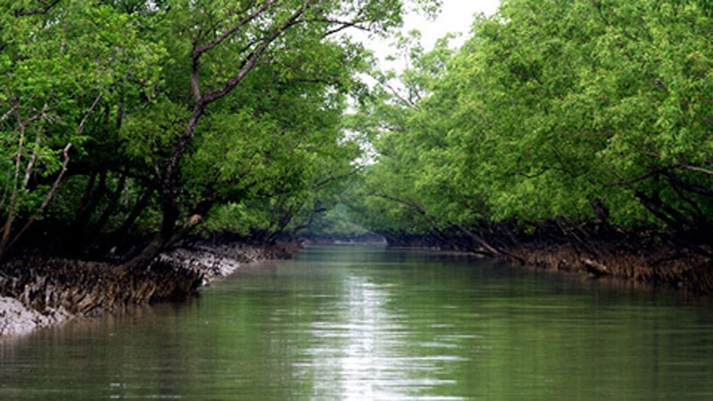
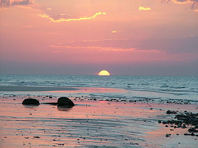

Sundarban is the world’s largest mangrove forest. It is famous for the Royal Bengal Tiger, there are about 400 Royal Bengal Tiger in this forest.You can also find beautiful spotted deer in this forest. Read More....
|  |  | |
Sundarban is the world’s largest mangrove forest. It is famous for the Royal Bengal Tiger, there are about 400 Royal Bengal Tiger in this forest.You can also find beautiful spotted deer in this forest. Read More.... |
Cox’s Bazar sea beach, the world’s longest natural sandy sea beach with its incredible 120 km length. It is the most visited tourist destination in Bangladesh.It is located in Chittagong. Read More.... | St. Martin’s Island is a small island in the northeastern part of the Bay of Bengal, about 9 km south of the tip of the Cox’s Bazar-Teknaf peninsula, and forming the southernmost part of Bangladesh Read More.... |